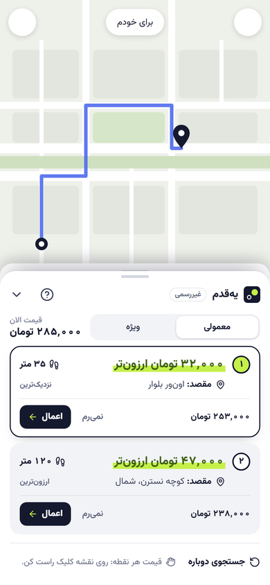

یه قدم اونورتر،
ارزونتر
قیمت اسنپ و تپسی فقط به مسیر بستگی نداره؛ نقطهی دقیق سوار و پیاده شدن هم مهمه. یهقدم نقطههای نزدیکی رو که میشه پیاده رفت قیمت میگیره و نشونت میده کجا چند هزار تومن ارزونتره.
برنامهای غیررسمیه و به اسنپ و تپسی وابسته نیست. فقط قیمت میپرسه و هیچوقت سفری ثبت نمیکنه.
سه حرکت، حدود ده ثانیه
مسیرت رو مثل همیشه بزن. وقتی قیمتها اومدن، دکمهی «ارزونترش کن» بالای قیمتها پیدا میشه.
-
بگو تا کجا پیاده میای
برای مبدا و مقصد جدا انتخاب کن: ۱۰۰، ۲۰۰ یا ۳۰۰ متر. با «همینجا» اون سر سر جاش میمونه و همهی استعلامها برای سر دیگه خرج میشه.

-
پیشنهادها رو ببین
هر کارت میگه چقدر ارزونتر، چند متر پیاده و کجا. شمارهی کارت روی نقشه هم هست. پیشنهادی رو نمیخوای؟ «نمیرم» رو بزن.

-
اعمال کن و پیاده برو
روی «اعمال» بزن و نقطهی جدید جایگزین میشه. بعد پیاده تا اونجا برو و سفر رو خودت ثبت کن.

توی اسنپ
پین خودش میره سر نقطهی جدید و تأیید میشه. اگه تأیید نشد، روی پین بزن.
توی تپسی
خود صفحه با نقطهی جدید باز میشه و تأیید لازم نیست. قیمت زنده هم کنار قیمت قبلی نشون داده میشه.
اسنپ و تپسی کنار هم
اگه اجازه بدی، یهقدم قیمت همین مسیر رو از سرویس دیگه هم میگیره و میگه کدوم ارزونتره. «برو به تپسی» (یا اسنپ) همون مسیر رو اونجا باز میکنه. توی اپ اندروید هم دو تب «اسنپ | تپسی» بالای صفحه هست و هر کدوم صفحهی خودش رو نگه میداره.
خیالت راحت
- سرور ندارههمهچیز روی گوشی خودت میمونه و هیچ دادهای جمع نمیشه.
- فقط قیمت میپرسههیچوقت سفر درخواست یا لغو نمیکنه و توکن حسابت از دستگاهت بیرون نمیره.
- مراقب حسابتهتعداد جستجوها محدوده تا سرویس حساس نشه. بعیده، ولی ممکنه سرویس استعلام خودکار رو خلاف قوانینش بدونه؛ استفاده با مسئولیت خودته.
- متنبازهکدش رو توی GitHub ببین و هر نسخهای که دانلود میکنی رو با checksum چک کن.
نصب
اندروید
- فایل APK رو از دکمهی بالا دانلود کن.
- بازش کن و اگه گوشی پرسید، نصب از این منبع رو اجازه بده.
- اپ رو باز کن. بار اول مقدمه و اعلان «غیررسمی» رو میبینی؛ قبولش کن، بعد اسنپ یا تپسی رو انتخاب کن و با حساب خودت وارد شو.
- برای عوض کردن سرویس، روی «اسنپ» یا «تپسی» بالای صفحه بزن. اپ با آخرین سرویس باز میشه.
مرورگر کامپیوتر
- فایل zip افزونه رو دانلود کن و از حالت فشرده دربیار.
- توی Chrome یا Edge برو به
chrome://extensionsو Developer mode رو روشن کن. - Load unpacked رو بزن و پوشهی بازشده رو انتخاب کن.
- توی سایت اسنپ یا تپسی مبدا و مقصد رو بزن و روی «ارزونترش کن» کلیک کن. بعد از هر بار نصب یا بهروزرسانی، تبهای باز رو یک بار رفرش کن.
فایرفاکس هم توی مانیفست هست ولی هنوز امتحان نشده.
سوالهای پرتکرار
چرا بعضی وقتها صرفهای پیدا نمیشه؟
شبها و مسیرهای خلوت قیمت نقطههای اطراف تقریباً یکیه. ساعتهای شلوغ و بلوارهای دوطرفه معمولاً نتیجهی بهتری دارن.
قیمتی که نشون میده همونیه که موقع سفر میگیرم؟
قیمت نهایی رو خود سرویس موقع درخواست سفر نشون میده. قیمتها توی چند دقیقه عوض میشن (توی تپسی هر یک دقیقه) و یهقدم وقتی قیمت جابهجا بشه خبرت میکنه، ولی صرفه تضمین نمیشه.
«همینجا» یعنی چی؟
اون سر، مبدا یا مقصد، جابهجا نمیشه. اگه فقط مقصد برات مهمه، مبدا رو روی «همینجا» بذار تا همهی استعلامها برای مقصد خرج بشه.
اطلاعاتم کجا میره؟
هیچجا. یهقدم سرور نداره و فقط به خود سرویس (اسنپ یا تپسی) و نقشهی عمومی خیابانها درخواست میفرسته. اگه اجازه بدی، قیمت همون مسیر رو از سرویس دیگه هم میپرسه، با حساب خودت و از داخل صفحهی همون سرویس. جزئیاتش توی PRIVACY.md نوشته شده.
باگ دیدم یا پیشنهاد دارم
توی Issues بنویس و توکن و آدرس واقعیت رو پاک کن. مشکل امنیتی رو طبق SECURITY.md خصوصی گزارش کن.